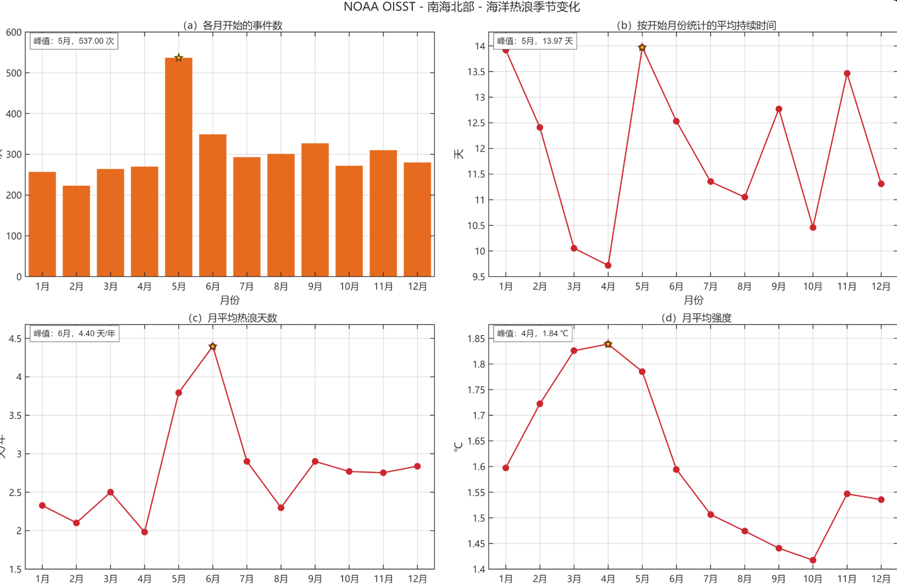
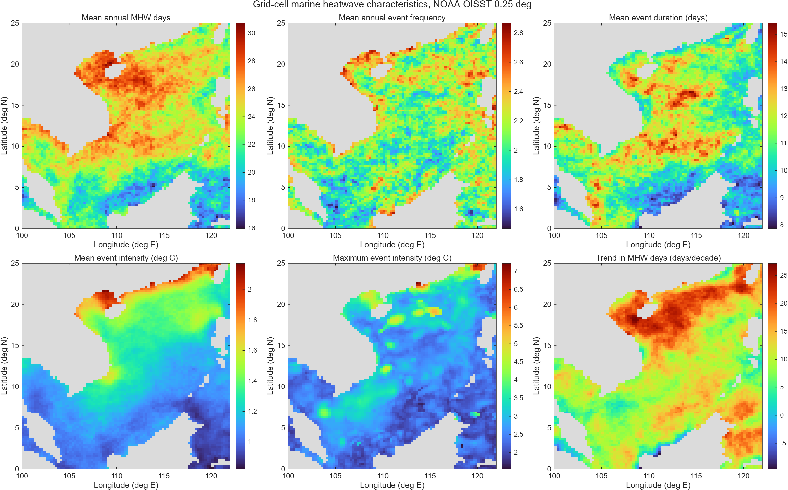

从课堂问题 读懂海洋。Understand the Ocean Through Classroom Questions
八次课堂记录、前七章出门票、教材公式精读和南海数据故事，展示我怎样从疑问走到可检验的答案。 / Eight lesson records, exit tickets for Chapters 1–7, textbook formula notes and a South China Sea data story show how my questions became testable answers.
证据状态 / Evidence status: 页面已覆盖评分表中 14 项可由网页核验的内容；“别人看得懂”需由同学或家人在故事会末尾完成一次复述确认。 / The page now supplies evidence for 14 machine-checkable criteria. A classmate or family member must complete the tell-back check for the one criterion that requires human confirmation.
独立课堂区 · 前七章 + 综合课 / CLASSROOM JOURNAL
八次课，我真正带走了什么？What I actually took away from eight lessons
海洋学的尺度 / Scales of oceanography教材第 1 章 / Chapter 1
我的课堂笔记：我以前按“海面、深海”分主题，这节课让我改用时间和空间尺度判断主导过程：几秒、几米的波浪与几十年、几千公里的环流不能套同一组近似。 My note: I used to sort topics into “surface” and “deep ocean.” I now first ask about time and length scales, because second-scale waves and decade-scale circulation do not permit the same approximations.
出门票 / Exit ticket：研究一个现象前，先写出它的典型长度、时间和速度尺度。 / Before analysing a phenomenon, write down its length, time and velocity scales.
我的课堂笔记：地形不是地图背景。陆架控制近岸交换，海峡限制水团进出，海岭和海沟会改变深层流路径。渤海箱体题中的海峡就是体积与盐度收支的“门”。 My note: Topography is not decorative background. Shelves control coastal exchange, straits gate water masses, and ridges steer deep flow. In the Bohai box model, the strait is the gate for volume and salt budgets.
出门票 / Exit ticket：为什么同样的风在开阔洋盆和狭窄海峡中会产生不同响应？ / Why can the same wind produce different responses in an open basin and a narrow strait?
我的课堂笔记：温度和盐度不是两张互不相干的图；它们共同决定密度，压强又决定原位温度与位温的区别。读 Argo 时我应同时检查 TEMP、PSAL、PRES 和质量控制标记。 My note: Temperature and salinity are not separate pictures. Together they set density, while pressure separates in-situ from potential temperature. For Argo I should inspect TEMP, PSAL, PRES and their quality flags together.
当时没听懂 → 后来想通 / Question → resolution
我原先以为“深度越大，密度越大”只说明冷水下沉。后来把状态方程和静水压放在一起看，才明白原位密度还受压缩影响；比较水团稳定性时要使用位密度。 / I first read increasing density with depth as simply “cold water sinks.” Combining the equation of state with hydrostatic pressure showed me that compression also changes in-situ density; potential density is needed for comparing water-mass stability.
出门票 / Exit ticket：若温度下降而盐度也下降，密度一定增大吗？ / If both temperature and salinity decrease, must density increase?
04
典型温盐分布与水团 / Typical distributions and water masses教材第 4 章 / Chapter 4
我的课堂笔记：副热带北太平洋常见暖、咸的上层水和清楚的温跃层；副极地表层更冷、更淡、层结较弱。经向环流和混合让一条温盐剖面成为水团“履历表”。 My note: The subtropical North Pacific often has a warm, salty upper layer and a clear thermocline, whereas subpolar surface water is colder, fresher and less strongly stratified. Circulation and mixing turn a T–S profile into a water mass “travel record.”
出门票 / Exit ticket：只看温度剖面，为什么可能误判水团稳定性？ / Why can a temperature-only profile misdiagnose water-column stability?
05
质量、盐度与热量收支 / Mass, salt and heat budgets教材第 5 章 / Chapter 5
我的课堂笔记：收支题先画控制体，再统一正方向。短波通常向海洋输入，长波、潜热和感热常写成海洋向上损失；平流和卷入不能因为“看不见”就漏掉。 My note: I now draw the control volume and define the sign convention before doing a budget. Shortwave usually enters the ocean; longwave, latent and sensible heat are often upward losses. Advection and entrainment remain terms even when they are not visible.
出门票 / Exit ticket：暖海面遇到干冷大风时，哪一项热通量通常最强？ / Which heat-flux term usually becomes strongest when dry, cold, fast air crosses warm water?
我的课堂笔记：EOF 把协方差最大的空间结构排在前面，但“第一模态”不自动等于“第一物理机制”。我必须先去季节、去趋势、处理缺测和面积权重，再解释模态。 My note: EOF ranks spatial structures by covariance, but mode 1 is not automatically mechanism 1. I must remove the seasonal cycle and trend, handle missing values, and apply area weighting before interpreting a mode.
当时没听懂 → 后来想通 / Question → resolution
我曾把方差贡献率 63.28% 理解成“解释了 63.28% 的热浪成因”。重算并查看 PC 后，我才明白它只表示在当前预处理和变量定义下，EOF1 解释了 63.28% 的样本方差。 / I once read 63.28% as “63.28% of heatwave causes.” Rechecking the calculation and PC series showed that it means 63.28% of sample variance under this variable definition and preprocessing.
出门票 / Exit ticket：画 EOF 图前必须报告哪三项预处理？ / Which three preprocessing choices must be reported before showing an EOF map?
我的课堂笔记：压强梯度先让海水加速，科氏力随速度增大并改变方向；两力接近平衡后，流不再直接从高压冲向低压，而是大致沿等压线走。摩擦强或靠近赤道时，这个近似会变差。 My note: The pressure gradient first accelerates water. Coriolis grows with speed and turns the motion. When the two forces nearly balance, flow follows pressure contours instead of running directly downhill. Strong friction and the equator weaken this approximation.
当时没听懂 → 后来想通 / Question → resolution
课堂图中等密度面倾斜，但我不明白怎样得到流速。后来按样本断面算动态高度差，再用地转关系除以科氏参数和站距，才把“密度结构 → 压强差 → 垂向切变”连起来。 / The class section showed sloping isopycnals, but I did not see how velocity followed. Calculating dynamic-height differences and applying the geostrophic relation connected density structure → pressure difference → vertical shear.
出门票 / Exit ticket：北半球中，压强梯度力指向东时，平衡流大致指向哪里？ / In the Northern Hemisphere, if the pressure-gradient force points east, which way does the balanced current point?
08
综合研究：南海海洋热浪 / Synthesis: South China Sea marine heatwaves课堂图 + 本地 OISST · Class figure + local OISST
我的课堂笔记：事件数、持续时间、热浪天数和强度回答不同问题，峰值月份不一致并不矛盾。我把课堂季节图与 1996—2025 年本地 OISST 结果分开标注，避免把截图能读出的现象写成未经检验的因果。 My note: Event count, duration, heatwave days and intensity answer different questions, so their peak months need not match. I keep the classroom seasonal chart separate from my 1996–2025 local OISST result and do not turn a visible pattern into an untested cause.
出门票 / Exit ticket：为什么“5 月开始事件最多”不能推出“5 月平均强度最高”？ / Why does “most events begin in May” not imply “highest mean intensity in May”?
独立教材区 / TEXTBOOK LAB
把书里的关系式，变成我能使用的工具Turning textbook relations into tools I can use
参考教材：Talley, Pickard, Emery & Swift (2011), Descriptive Physical Oceanography: An Introduction, 6th ed. 每张卡片标出章、节并附我的解释。 / Each card cites the chapter and section, then adds my interpretation.
教材证据 01 / ITEM 01
静水压 / Hydrostatic pressure
∂p/∂z = −ρg
第 3 章 3.2 节 / Ch. 3 §3.2. 若 z 向上，压强随深度增加；海洋中 1 dbar 约对应 1 m，只是近似。我的 Argo 剖面因此用压力作垂向坐标，再谨慎换算深度。 / With z positive upward, pressure rises downward. Roughly 1 dbar corresponds to 1 m, so I retain pressure as the Argo vertical coordinate before any careful depth conversion.
教材证据 02 / ITEM 02
海水状态方程 / Equation of state
ρ = ρ(S, T, p)
第 3 章 3.5 节 / Ch. 3 §3.5. 密度由温度、盐度和压强共同决定。我的延伸是使用 TEOS-10 的绝对盐度与保守温度，而不是用简单线性式代替真实海水。 / Density depends jointly on salinity, temperature and pressure. My extension is to use TEOS-10 Absolute Salinity and Conservative Temperature rather than a simple linear seawater approximation.
教材证据 03 / ITEM 03
混合层热量收支 / Mixed-layer heat budget
ρ₀cₚh · ∂T/∂t = Qnet − advection − entrainment
第 5 章 5.4–5.5 节 / Ch. 5 §§5.4–5.5. 课堂重点放在 Qs、Qb、Qe、Qh；教材的控制体写法提醒我，温度变化还受层厚、平流与卷入影响。 / Class focused on Qs, Qb, Qe and Qh; the textbook control-volume view reminds me that layer thickness, advection and entrainment also affect temperature change.
教材证据 04 / ITEM 04
地转平衡 / Geostrophic balance
fu = −(1/ρ₀)∂p/∂y ··· fv = (1/ρ₀)∂p/∂x
第 7 章 7.6 节 / Ch. 7 §7.6. 这不是说海水“没有加速度”，而是说在大尺度、低摩擦条件下，两项主导力近似抵消。站距、纬度和密度积分都会进入实际计算。 / This does not mean the ocean has no acceleration; it means the two leading forces nearly cancel at large scales and weak friction. Station spacing, latitude and integrated density all enter the calculation.
同一知识点：书上、课上、我的延伸 / Textbook → class → my extension
知识点 / Topic教材 / Textbook课堂 / Class我的补充 / My extension
海水密度 / Density第 3 章给出 T–S–p 关系。 / Ch. 3 gives the T–S–p relation.用垂向剖面判断层结。 / Read stratification from profiles.把 Argo 压力、温度、盐度转为位密度断面。 / Convert Argo P–T–S into a potential-density section.
热量收支 / Heat budget第 5 章强调控制体和守恒。 / Ch. 5 stresses control volumes and conservation.比较 Qs、Qb、Qe、Qh 的控制因素。 / Compare controls on Qs, Qb, Qe and Qh.用 OISST 检查温度结果，但不把 SST 单独当成热通量。 / Use OISST to test temperature outcomes without treating SST itself as heat flux.
数据分析 / Data analysis第 6 章讨论采样、误差和多维数据。 / Ch. 6 covers sampling, errors and multidimensional data.从地图和剖面找规律。 / Find patterns in maps and sections.加入面积权重 EOF、PC 动画和可重复的步骤。 / Add area-weighted EOF, PC animation and reproducible steps.
地转流 / Geostrophy第 7 章从动量平衡推导。 / Ch. 7 derives it from momentum balance.从倾斜等密度面读压强差。 / Read pressure differences from tilted isopycnals.用样本站断面和交互动画验证方向与量级。 / Verify direction and magnitude with a sample section and interactive animation.
从海面坡度产生的压强梯度力出发，逐帧观察科氏偏转与地转平衡。可调纬度和海面高度差，并实时计算地转流速。 / Begin with the pressure-gradient force from a sea-level slope, then watch Coriolis turning and geostrophic balance develop frame by frame. Adjust latitude and sea-level difference to calculate geostrophic speed.
从逐日海温识别事件，读懂全南海的发生频次、持续时间、强度与空间差异。附研究数据、图表和原始课堂图解读。 / Detect events from daily SST and explore frequency, duration, intensity and spatial contrasts across the South China Sea, with research data and annotated figures.
1982—2022全季节空间统计 / All-season spatial statistics≥ 5 天 / ≥ 5 days连续超阈值才算事件 / Consecutive days above the threshold define an event6 项指标 / Six metrics频次、强度、持续等 / Frequency, intensity, duration and more
新研究专题 / NEW RESEARCH ATLAS
从观测到 EOF， 看见南海热浪的模态。From Observations to South China Sea Heatwave Modes
用你本地的 1996—2025 年 OISST 分析结果，图解观测数据、热浪识别、EOF 空间模态与时间系数。滑动年份，播放真实数据驱动的重建动画。 / Use the local 1996–2025 OISST analysis to explore observations, heatwave detection, EOF spatial modes and principal components. Slide through years or play the data-driven reconstruction.
五月开始得多，为什么六月热浪天数更多？Why do more events start in May, while June has more heatwave days?
这是我从一张课堂图出发，自己查定义、看数据、画图并留下下一步问题的过程。 / This is how I moved from one classroom figure to definitions, data, plots and a new question.
给家人讲的三句话 / Three sentences for family
海洋热浪就是一片海持续多天“比它平时该有的温度更热”。事件从哪个月开始、持续多久、每天有多强，是三件不同的事。我的图说明这些峰值可以落在不同月份，所以要先分清指标，再谈原因。 / A marine heatwave is an area of ocean staying hotter than its usual seasonal range for several days. Start month, duration and intensity are different measurements. Their peaks can occur in different months, so I separate the metrics before asking why.

课堂图证据：事件开始次数 5 月最高，月平均热浪天数 6 月最高，平均强度 4 月最高。 / Classroom evidence: event starts peak in May, mean heatwave days in June and mean intensity in April.
开头 / BEGINNING
我从矛盾感出发 / I started with a puzzle
我先把四幅图都当成“热浪多不多”，所以觉得三个峰值不一致。重新读纵轴后，我提出问题：分母和统计对象是不是不同？ / I first treated all four panels as “how much heatwave,” so the three peak months looked contradictory. Reading each y-axis again led me to ask whether their denominators and counted objects differed.
中间 / MIDDLE
我自己做了什么 / What I did
我查了事件定义，把“超过逐日季节阈值并连续至少 5 天”作为识别逻辑；随后区分开始次数、单次持续时间、每年热浪天数和温度异常强度，并用本地 1996—2025 OISST 结果检查空间分布与年际变化。 / I checked the event definition, using exceedance of a daily seasonal threshold for at least five days. I then separated event starts, event duration, annual heatwave days and temperature-anomaly intensity, and checked the spatial and interannual patterns in my local 1996–2025 OISST results.
峰值月份不同并不矛盾，因为事件可以在 5 月开始并延续到 6 月，而强度衡量的是超阈值幅度。下一步我想把净热通量、混合层深度和海流并入分析，检验季风转换究竟改变了哪一个过程。 / The peaks are compatible: events may begin in May and persist into June, while intensity measures exceedance magnitude. Next I want to combine net heat flux, mixed-layer depth and currents to test which process changes during the monsoon transition.

我的数据证据 / My data evidence · 1996—2025 local OISST analysis
自检边界 / Reliability boundary
课堂季节图未写明基准期，因此只读图，不据此复算趋势。 / The classroom plot omits its baseline, so I interpret it without claiming a reproduced trend.
OISST 是融合和插值后的 0.25° 海表产品，不能替代单站原位剖面。 / OISST is a blended, interpolated 0.25° surface product, not a substitute for in-situ profiles.
EOF 是统计模态；物理归因仍需通量、风和环流证据。 / EOF is statistical; attribution still requires flux, wind and circulation evidence.
前七章出门票 / EXIT TICKET · CHAPTERS 1–7
先写一句，再看参考思路Write one sentence before revealing the guide
题目对应前七章课堂主线。回答与完成进度只保存在你的浏览器，刷新后仍可继续。 / These prompts follow the first seven chapters. Answers and progress stay in your browser so you can continue later.
0 / 7 已作答 / answered
CH 1 · 尺度 / SCALES
为什么研究现象前要先估算时间和空间尺度？Why estimate time and length scales before choosing a model?
尺度决定哪些力和变化可以忽略，也决定观测频率与网格能否分辨现象。 / Scales determine which terms may be neglected and whether sampling can resolve the phenomenon.
CH 2 · 地形 / TOPOGRAPHY
海峡为什么能控制相邻海盆的交换？Why can a strait control exchange between neighbouring basins?
有限宽度和深度限制流量与可通过的水层，摩擦和门槛深度还会选择能交换的水团。 / Finite width and depth limit transport and accessible layers; friction and sill depth select which water masses can pass.
CH 3 · 海水物性 / SEAWATER
温度下降且盐度下降时，密度一定增大吗？If temperature and salinity both fall, must density increase?
不一定。降温通常增密，淡化通常减密，结果取决于状态方程中的相对贡献和参考压强。 / Not necessarily. Cooling usually raises density while freshening lowers it; the result depends on their relative effects and reference pressure.
CH 4 · 水团 / WATER MASSES
为什么 T–S 图比单独温度剖面更适合识别水团？Why is a T–S diagram better than temperature alone for identifying water masses?
水团携带共同的温盐组合；混合在 T–S 空间留下路径，而且盐度能区分温度相近但来源不同的海水。 / Water masses carry joint T–S signatures; mixing leaves paths in T–S space, and salinity separates waters with similar temperature but different origins.
CH 5 · 收支 / BUDGETS
暖海面遇到干冷大风时，Qe 与 Qh 会怎样变化？What happens to Qe and Qh when dry, cold, fast air crosses warm water?
海气湿度差、温差和湍流交换都增强，向上的潜热与感热损失通常同时增大，且潜热往往更大。 / Humidity contrast, temperature contrast and turbulent exchange strengthen, increasing upward latent and sensible heat loss; latent heat is often larger.
CH 6 · 观测与分析 / METHODS
为什么 EOF1 不能直接命名为某个物理机制？Why should EOF1 not be named directly after a physical mechanism?
EOF1 只是在既定变量、区域、时段、权重和预处理下解释方差最多的正交模态；物理机制要用独立资料验证。 / EOF1 is the leading orthogonal variance mode under a chosen variable, domain, period, weighting and preprocessing; mechanisms require independent evidence.
CH 7 · 动力学 / DYNAMICS
为什么大尺度海流常沿等压线，而不直接从高压流向低压？Why do large-scale currents often follow pressure contours rather than flow straight downhill?
压强梯度先加速海水，科氏力随速度增强并转向；两者近似平衡后，速度与压强梯度近似垂直。 / The pressure gradient starts the motion; Coriolis grows with speed and turns it. Near balance, velocity is approximately perpendicular to the pressure gradient.
资料汇集 / THE COLLECTION
资料目录The Collection
所有内容公开可读，每篇都可以单独分享。 / Every article is public and has its own shareable link.
没有找到匹配内容，请更换关键词。 / No matching articles. Try another keyword.
关于资料库 / ABOUT THIS LIBRARY
一份可以继续生长的 课堂资料。A Classroom Library That Keeps Growing
从课堂照片中的问题出发，整理成可检索的答案。图表解释会区分图中可直接读出的结果与需要额外数据才能验证的推断。新课堂内容可通过管理入口添加，发布后访客即可查看。 / Questions from classroom photos become searchable answers. Figure notes distinguish observations visible in a chart from inferences requiring more data. New material can be added through the editor and becomes public when saved.